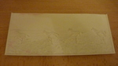

<meta charset="utf-8">
<meta name="viewport" content="width=device-width">
<meta name="description" content="3d-Druck Service für Hückelhovens Bürger.">
<meta name="keywords" content="Hückelhoven, Makerszene, Adam Brunnmeier">
<meta name="author" content="Adam Brunnmeier">
<link rel="icon" href="/favicon.png">
<title>3d-Druck Service</title>

<link rel="stylesheet" href="3dservice/3dservice.css">
<link rel="stylesheet" href="3dservice/skills.css">

<header>
  <h1>3d-Druck Service</h1>

  <h2>Ein Projekt für Hückelhovens Makerszene</h2>
</header>

<section>
  <div class="gallery">
    <a href="3dservice/fullres/01.jpg"></a>
    <a href="3dservice/fullres/02.jpg"></a>
    <a href="3dservice/fullres/03.jpg"></a>
    <a href="3dservice/fullres/04.jpg"></a>
    <a href="3dservice/fullres/05.jpg"></a>
    <a href="3dservice/fullres/06.jpg"></a>
    <a href="3dservice/fullres/07.jpg"></a>
    <a href="3dservice/fullres/08.jpg"></a>
    <a href="3dservice/fullres/09.jpg"></a>
    <a href="3dservice/fullres/10.jpg"></a>
    <a href="3dservice/fullres/11.jpg"></a>
    <a href="3dservice/fullres/12.jpg"></a>
    <a href="3dservice/fullres/13.jpg"></a>
    <a href="3dservice/fullres/14.jpg"></a>
    <a href="3dservice/fullres/15.jpg"></a>
    <a href="3dservice/fullres/16.jpg"></a>
    <a href="3dservice/fullres/17.jpg"></a>
    <a href="3dservice/fullres/18.jpg"></a>
    <a href="3dservice/fullres/19.jpg"></a>
  </div>
  <div class="summary">
    <h3>Zusammenfassung</h3>
    <ul>
      <li>Der Service gilt für alle Bürger aus Hückelhoven.</li>
      <li>Man kann pro Woche 10g gratis drucken.</li>
      <li>Mehr Gewicht oder mehr Drucke muss man mit <i class="coin"></i> bezahlen.</li>
      <li>Ein Auftrag wird als Email an <a href="mailto:adam.brunnmeier@gmail.com">adam.brunnmeier@gmail.com</a> geschickt.</li>
      <li>Der Ausdruck kann nach einer Woche Bearbeitungszeit freitags 14:20-15:30 im Computerraum C00.49 im C-Gebäude des Gymnasiums Hückelhoven abgeholt werden.</li>
      <li>Als Voraussetzung musst du Level 1 im 3d-Druck Skill <a href="#lvl1-3dprint"><i class="lvl1-3dprint"></i></a> sein.</li>
    </ul>
  </div>
  <p>
    Der Service steht für Bürger aus Hückelhoven und Vororten zur Verfügung. Das Prinzip ist wie folgt: Du schickst mir eine Email mit der .gcode Datei, benennst das verwendete Material, die Druckdauer und die benötigte Materialmenge in Gramm. Dann drucke ich das Teil innerhalb einer Woche auf meinem Drucker aus. Sobald es ausgedruckt ist, erhältst du eine Rückmeldung mit einem Foto. Danach hast du die Möglichkeit das Modell freitags zwischen 14:20 und 15:30 im Glasgebäude (C-Gebäude) des Gymnasiums Hückelhoven im Keller im Computerraum C00.49 abzuholen.
  </p>
  <p>
    Ausdrucke bis inklusive 10g sind einmal pro Woche gratis. Alles darüber kostet <i class="coin">1</i> Bearbeitung + <i class="coin">1</i> pro angefangene 10g Material. Ein Modell das 27g wiegt kostet also beispielsweise <i class="coin">4</i>. Bezahlt wird bei Abholung.
  </p>
  <p>
    Die <i class="coin"></i> kann man zurzeit nur verdienen, indem man am Gymnasium Hückelhoven die Informatik-AG besucht (<i class="coin">1</i> pro Besuch) oder die Jugend forscht AG (<i class="coin">1</i> pro Besuch).
  </p>
  <p>
    Weiterhin musst du mindestens Level 1 im 3d-Druck Skill sein, um den 3d-Druck-Service nutzen zu dürfen.
  </p>

  <div class="skill" id="lvl1-3dprint">
    <h2>3d-Druck Level 1</h2>
    <div class="description">
      
      <p class="description">
        Mit Level 1 kann man den 3d-Stift nutzen, um beliebige Skulpturen zu erschaffen. Man kann mit ihm kleinere Dinge reparieren oder verbinden.
        Außerdem kann man den Computer nutzen, um einfache und fortgeschrittenere Objekte zu erzeugen. Man kann Objekte für den 3d-Druck vorbereiten.
      </p>
    </div>
    <div class="collapse">
      <input id="gf5tEXQx" type="checkbox">
      <label for="gf5tEXQx">
        Prüfung
      </label>
      <div>
        <p>Folgende Dinge müssen erfüllt werden:</p>
        <ul>
          <li>Du musst eine Skulptur mit einem 3d-Stift erschaffen.</li>
          <li>Du musst ein Objekt im Computer erzeugen.</li>
          <li>Du musst ein Objekt für den Druck vorbereiten.</li>
          <li>Du musst ein Objekt drucken oder drucken lassen.</li>
        </ul>
        <p>Als Nachweis dafür wird erfordert:</p>
        <ul>
          <li>Ein Foto der erschaffenen Skulptur.</li>
          <li>Die STL-Datei des digitalen Objektes.</li>
          <li>Die gcode-Datei nach dem Slicen.</li>
          <li>Eine gcode-Datei um das Objekt drucken zu lassen. Falls du es selber druckst, reicht auch ein Foto des gedruckten Objektes.</li>
        </ul>
        <p>Alle Nachweise können per Email an <a href="mailto:adam.brunnmeier@gmail.com">adam.brunnmeier@gmail.com</a> gesendet werden.</p>
      </div>
    </div>
    <div class="collapse">
      <input id="PXWHcrP" type="checkbox">
      <label for="PXWHcrP">
        Training
      </label>
      <div>
        <p>
          In diesem Abschnitt wird ein möglicher Weg erklärt, um die gestellten Aufgaben zu lösen.
        </p>
        <p>
          Einen 3d-Stift kann man freitags von 14:20-15:30 im Computerraum C00.49 im C-Gebäude des Gymnasium Hückelhovens ausleihen, wenn man keinen zuhause hat. Die Bedienung kann man sich z.B. auf youtube ansehen: <a href="https://www.youtube.com/watch?v=edUVi0IZmdw">Mein 3D-Stift / So funktioniert er</a>. Man braucht ein paar Versuche, um sich an die Bedienung zu gewöhnen. Zum Einstieg kann man versuchen ein Bild abzumalen, indem man eine Folie darüber legt und auf der Folie abpaust.
        </p>
        <p>
          Ein digitales 3d-Modell lässt sich am besten mit Tinkercad erstellen. Melde dich dafür zunächst auf der Webseite an. Du kannst entweder den Link  <a href="https://www.tinkercad.com/join">www.tinkercad.com/join</a> benutzen, den Button "Create a personal account" klicken und dir mit deiner Email einen eigenen Account erstellen. Alternativ kannst kannst du den Link <a href="https://www.tinkercad.com/joinclass/VEQGC9F2ZI6T">www.tinkercad.com/joinclass/VEQGC9F2ZI6T</a> verwenden, den Button "Join with Nickname" klicken und dich mit einem geteilten Account anmelden. Du kannst dabei folgende Nicknames verwenden: kirsche, weintraube, himbeere, erdbeere, brötchen, brot, weißbrot, muskat, ananas, nuss, kiwi, orange, banane, granatapfel, zitrone, apfel.
        </p>
        <p>
          Sobald du angemeldet bist, klicke ganz oben auf den Link "Learn". Es erscheinen mehrere Starters-Lektionen. Fange einfach mit der ersten an und arbeite dich durch alle 7 Starters-Lektionen durch. Sobald du sie durch hast, klicke nocheinmal auf "Learn" und wähle den Tab "Lessons" aus. Hier solltest du am besten auch noch eine Lektion durchführen. Sobald du damit fertig bist, klicke oben rechts auf dein Profilbild und wähle den Link "+ New" aus. Damit startest du dein erstes eigenes Design.
        </p>
        <p>
          Wenn du mit deinem eigenen Modell fertig bist, kannst du es über den "Export" oder "Download" Button herunterladen. Wähle dafür im erscheinenden Menü das Format .STL aus. Damit hast du ein fertiges digitales 3d-Modell.
        </p>
        <p>
          Der letzte Schritt ist es, das digitale Modell zu slicen. Lade dir dafür Cura vom <a href="https://ultimaker.com/de/software/ultimaker-cura">Download Link</a> herunter und installiere es auf deinem Computer. Wenn du es zum ersten Mal startest, musst du noch ein Drucker-Profil hinzufügen. Sobald das Fenster mit der Überschrift "Add a printer" erscheint, wähle "Add a non-networked printer" aus. Es erscheinen Druckerhersteller und Modelle. Wenn du einen eigenen Drucker hast, wähle den Modellnamen deines Druckers. Wenn du stattdessen den Druck-Service verwenden möchtest, wähle Creality3D → Creality Ender-3 und bestätige die Auswahl.
        </p>
        <p>
          Sobald du in der Hauptansicht von Cura angelangt bist, findest du oben links den Öffnen-Button. Verwende ihn und lade die STL-Datei. Die STL-Datei hast du vorher mit Tinkercad oder einem anderen Programm erstellt. Optional kannst du die Werkzeuge auf der linken Seite verwenden um das Modell zu vergrößern, zu verkleinern oder zu kippen. Klicke dann den "Slice" Button. Nach ein paar Sekunden ist der Slice-Vorgang fertig. Du kannst dann den "Preview" Button klicken um dir anzusehen, wie der Drucker das Modell konkret drucken wird. Klicke "Save to File" und speichere die .gcode-Datei auf deinem Computer. Damit hast du eine fertige Datei zum drucken.
        </p>
        <p>
          Übrigens: Wenn du statt deines eigenen Objektes ein fremdes Objekt drucken möchtest, geht das auch. Du kannst dir ein fremdes Objekt zum Beispiel bei <a href="https://www.thingiverse.com">www.thinigiverse.com</a> herunterladen. Das gilt aber nur für den Druck. Für die Prüfung musst du trotzdem dein eigenes Objekt als .STL-Datei erzeugen.
        </p>
      </div>
    </div>
    <div class="collapse">
      <input id="TFYDekGL" type="checkbox">
      <label for="TFYDekGL">
        Bonus
      </label>
      <div>
        <ul>
          <li>
            3d-Druck-Service, siehe <a href = https://infoaghh.de/3dservice.html>https://infoaghh.de/3dservice.html</a>.
          </li>
        </ul>
      </div>
    </div>
  </div>
</section>

<footer>Verantwortlich für diese Seite ist <a href="mailto:adam.brunnmeier@gmail.com?subject=Kontaktanfrage">adam.brunnmeier@gmail.com</a></footer>